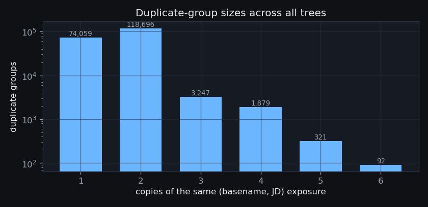
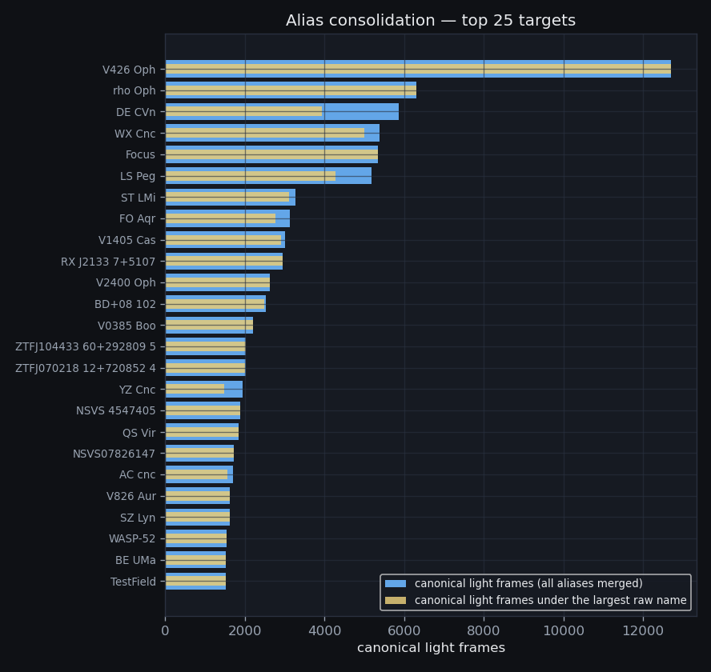
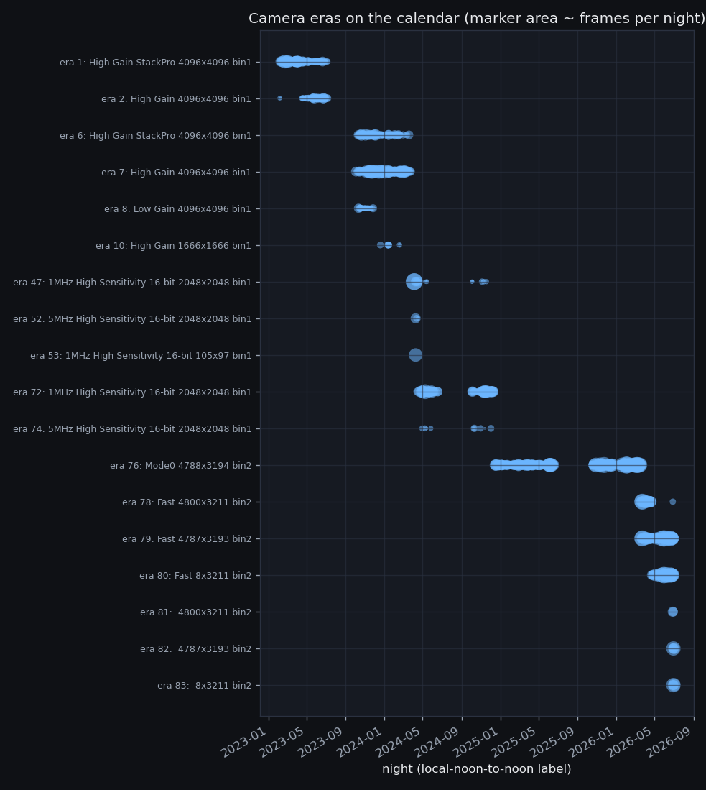
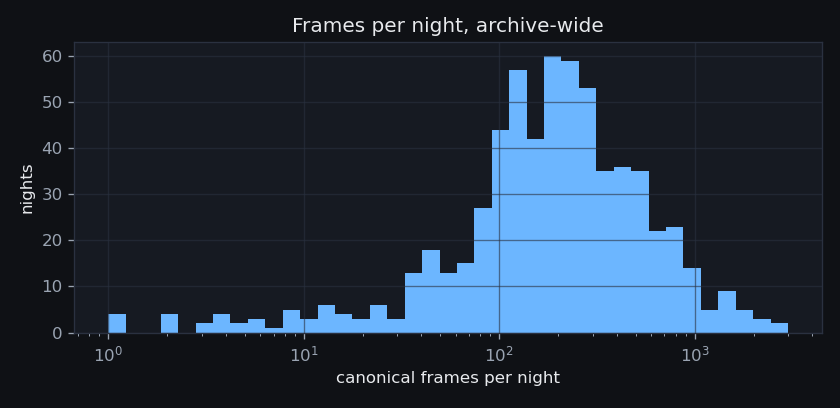
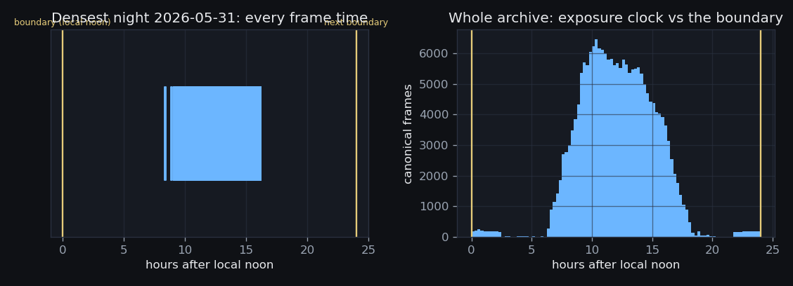
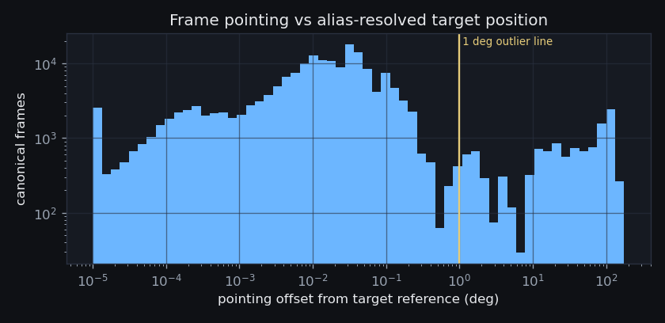
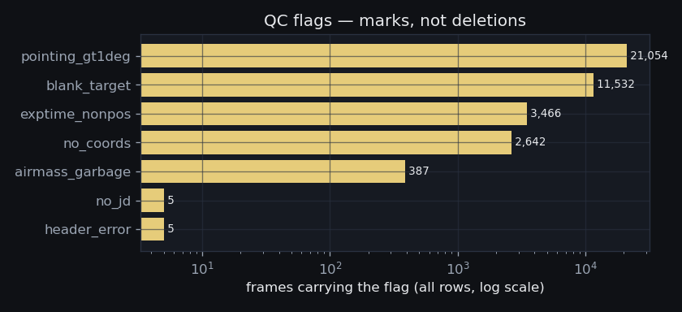

330,865 catalog rows → 198,294 canonical frames
· 1,977 targets · 84 camera eras
· 641 nights ·
built 2026-08-18T15:03Z from
rlmt-catalog.sqlite
(S0 v1.0 (2026-08-17),
commit 3fec788)
· back to the evidence hub
The catalog holds 330,865 rows. How many distinct exposures is that, and which copy of each is the one the pipeline reads?

| tree | catalog rows | canonical frames | duplicate copies | % duplicate |
|---|---|---|---|---|
| rawimage | 167,532 | 159,353 | 8,179 | 4.9% |
| reduced | 106,942 | 27,223 | 79,719 | 74.5% |
| macalester | 30,403 | 1,764 | 28,639 | 94.2% |
| iKon | 5,875 | 5,853 | 22 | 0.4% |
| other | 5,323 | 306 | 5,017 | 94.3% |
| external | 4,572 | 148 | 4,424 | 96.8% |
| coe | 2,316 | 242 | 2,074 | 89.6% |
| knox | 1,839 | 0 | 1,839 | 100.0% |
| Calibrations | 1,823 | 1,667 | 156 | 8.6% |
| iowa | 1,587 | 49 | 1,538 | 96.9% |
| augustana | 512 | 1 | 511 | 99.8% |
| mjc | 488 | 473 | 15 | 3.1% |
| grism | 477 | 418 | 59 | 12.4% |
| calib | 477 | 466 | 11 | 2.3% |
| AASPrep | 374 | 116 | 258 | 69.0% |
| cmos_tests | 118 | 118 | 0 | 0.0% |
| ASTR1070 | 62 | 62 | 0 | 0.0% |
| tmp_filter_quarantine | 42 | 21 | 21 | 50.0% |
| failed | 34 | 0 | 34 | 100.0% |
| hagrism | 30 | 1 | 29 | 96.7% |
| latency | 26 | 0 | 26 | 100.0% |
| classes | 6 | 6 | 0 | 0.0% |
| daily | 4 | 4 | 0 | 0.0% |
| forcolin | 3 | 3 | 0 | 0.0% |
Tree-policy caveat: 31 of the
625 observing nights with canonical Light frames hold them
in non-rawimage trees only (school mirrors, the iKon
tree) — a project counting nothing but its primary tree misses those
nights entirely (ST LMi’s iKon surplus in section 7 is the
worked example).
The SN 2023ixf lesson, confirmed archive-wide: duplication is not only cross-tree. 8,063 rawimage rows are copies of frames whose canonical row is also in rawimage — wholesale re-copied night directories:
| rawimage directory holding copies of other nights | duplicate frames |
|---|---|
rawimage/2023-07-08 | 3,122 |
rawimage/2023-07-09 | 2,402 |
rawimage/2023-07-07 | 1,369 |
rawimage/2023-03-01 | 436 |
rawimage/2023-06-13 | 418 |
rawimage/2023-10-05 | 189 |
rawimage/2023-02-10 | 84 |
rawimage/2023-02-09 | 18 |
Limitation, quantified: (basename, JD) cannot see a RENAMED
copy. 29,787 (target, JD) pairs occur on more than one
canonical frame — overwhelmingly reduced/ files renamed during
processing (e.g. every one of EU UMa’s 257
reduced-only “unique” frames shares its JD with a rawimage
frame). By tree:
| tree | canonical frames whose (target, JD) also exists in rawimage |
|---|---|
| reduced | 27,075 |
| macalester | 516 |
| mjc | 395 |
| Calibrations | 27 |
| ASTR1070 | 10 |
| external | 9 |
rawimage first, reduced last, ties broken
by earliest path; documented per-target exception: NGC 5548 prefers
macalester (the superset tree). Renamed reduced/
copies survive dedup by construction, so downstream accounting uses
canonical frames from each target’s primary tree (as section 7
does), and the (target, JD)-collision population above is handed to S1
as a suspect list.Every count below this line uses the 198,294 canonical frames. A project quoting raw rows overstates its dataset by up to ~2.9× (SN 2023ixf: 3,018 rawimage rows → 1,052 frames).
The catalog carries 3,019 distinct raw target names. How many real targets is that, and by exactly what rule does each variant map to its canonical name?

| canonical target | raw variants merged | catalog rows | resolution methods (union) |
|---|---|---|---|
| Vega | 43 | 982 | casefold,separators,synonym,exposure_tokens |
| Alphecca | 36 | 184 | casefold,exposure_tokens |
| Saturn | 26 | 156 | casefold,identity,exposure_tokens |
| bet CMi | 15 | 509 | casefold,separators,exposure_tokens |
| Psi Per | 14 | 326 | casefold,separators,exposure_tokens |
| zet Tau | 12 | 151 | casefold,separators,exposure_tokens |
| phi Leo | 12 | 569 | exposure_tokens,casefold,separators |
| Neptune | 12 | 192 | casefold,exposure_tokens |
| 5 Cnc | 12 | 468 | casefold,separators,exposure_tokens,identity |
| 19 Mon | 12 | 84 | casefold,separators,exposure_tokens |
| PLEIONE | 11 | 51 | casefold,exposure_tokens |
| 10 Cas | 11 | 40 | exposure_tokens,casefold,separators |
Coordinate-cone audit (0.2° on median plate-solved positions): 1,351 raw names had solved coordinates to check; 4 sit farther than 0.2° from their group’s pooled position — all explainable: mosaic/wide-field pointings of extended fields (M31, rho Oph) and a moving target (Saturn), where a fixed cone is meaningless by construction:
| raw name | canonical target | rows | method |
|---|---|---|---|
| M31 | M31 | 1,425 | casefold |
| rho Oph A | rho Oph A | 58 | whitespace,casefold,separators |
| rho Oph A | rho Oph A | 12 | casefold,separators |
| saturn | Saturn | 6 | identity |
| must-NOT-merge check | result |
|---|---|
| Dw1403+49 vs Dw1409+51 (adjacent survey fields) | separate keys ✓ |
| T CrB vs tet CrB (target vs its calibrator, 8° apart) | separate keys ✓ |
11,532 rows carry a blank target name (mostly
raw-tree grism lights with valid coordinates); they form no alias group and
are flagged blank_target for S1’s cone match.
Downstream stages see one name per target. The
reconciliation of section 7 works ONLY because the CV/BeStar filename
variants (mjcMay01 yzcnc, PHECDA lrg 0-25s,
Vega 0p001s lrg 5) land on their canonical targets.
How many distinct camera configurations produced this archive, and when was each one live?

All 84 discovered configurations
(11 distinct READOUTM strings; full table also exported as
products/manifest/eras.csv):
| era | READOUTM | NAXIS1 | NAXIS2 | bin | EGAIN | canonical frames | first night | last night |
|---|---|---|---|---|---|---|---|---|
| 1 | High Gain StackPro | 4,096 | 4,096 | 1 | 1.054 | 12,948 | 2023-02-06 | 2023-07-06 |
| 2 | High Gain | 4,096 | 4,096 | 1 | 1.054 | 3,621 | 2023-02-06 | 2023-07-06 |
| 3 | High Gain StackPro | 2,048 | 2,048 | 2 | 1.054 | 30 | 2023-04-06 | 2023-04-06 |
| 4 | Low Gain | 4,096 | 4,096 | 1 | 22.638 | 17 | 2023-04-17 | 2023-07-05 |
| 5 | HDR | 4,096 | 8,192 | 1 | — | 16 | 2023-04-17 | 2023-11-22 |
| 6 | High Gain StackPro | 4,096 | 4,096 | 1 | 1.057 | 7,451 | 2023-10-03 | 2024-03-19 |
| 7 | High Gain | 4,096 | 4,096 | 1 | 1.057 | 22,438 | 2023-10-03 | 2024-03-26 |
| 8 | Low Gain | 4,096 | 4,096 | 1 | 22.744 | 805 | 2023-10-12 | 2023-12-04 |
| 9 | High Gain | 1,112 | 1,112 | 1 | 1.057 | 53 | 2023-12-20 | 2024-01-16 |
| 10 | High Gain | 1,666 | 1,666 | 1 | 1.057 | 296 | 2023-12-20 | 2024-02-19 |
| 11 | High Gain | 1,666 | 1,604 | 1 | 1.057 | 2 | 2024-01-09 | 2024-01-09 |
| 12 | High Gain | 1,666 | 1,605 | 1 | 1.057 | 2 | 2024-01-09 | 2024-01-09 |
| 13 | High Gain | 1,666 | 1,606 | 1 | 1.057 | 2 | 2024-01-09 | 2024-01-09 |
| 14 | High Gain | 1,666 | 1,607 | 1 | 1.057 | 1 | 2024-01-09 | 2024-01-09 |
| 15 | High Gain | 1,666 | 1,609 | 1 | 1.057 | 1 | 2024-01-09 | 2024-01-09 |
| 16 | High Gain | 1,666 | 1,611 | 1 | 1.057 | 1 | 2024-01-09 | 2024-01-09 |
| 17 | High Gain | 1,666 | 1,612 | 1 | 1.057 | 1 | 2024-01-09 | 2024-01-09 |
| 18 | High Gain | 1,666 | 1,613 | 1 | 1.057 | 1 | 2024-01-09 | 2024-01-09 |
| 19 | High Gain | 1,666 | 1,614 | 1 | 1.057 | 1 | 2024-01-09 | 2024-01-09 |
| 20 | High Gain | 1,666 | 1,619 | 1 | 1.057 | 1 | 2024-01-09 | 2024-01-09 |
| 21 | High Gain | 1,666 | 1,620 | 1 | 1.057 | 1 | 2024-01-09 | 2024-01-09 |
| 22 | High Gain | 1,666 | 1,622 | 1 | 1.057 | 1 | 2024-01-09 | 2024-01-09 |
| 23 | High Gain | 1,666 | 1,624 | 1 | 1.057 | 1 | 2024-01-09 | 2024-01-09 |
| 24 | High Gain | 1,666 | 1,626 | 1 | 1.057 | 1 | 2024-01-09 | 2024-01-09 |
| 25 | High Gain | 1,666 | 1,628 | 1 | 1.057 | 1 | 2024-01-09 | 2024-01-09 |
| 26 | High Gain | 1,666 | 1,630 | 1 | 1.057 | 1 | 2024-01-09 | 2024-01-09 |
| 27 | High Gain | 1,666 | 1,632 | 1 | 1.057 | 1 | 2024-01-09 | 2024-01-09 |
| 28 | High Gain | 1,666 | 1,634 | 1 | 1.057 | 1 | 2024-01-09 | 2024-01-09 |
| 29 | High Gain | 1,666 | 1,636 | 1 | 1.057 | 1 | 2024-01-09 | 2024-01-09 |
| 30 | High Gain | 1,666 | 1,638 | 1 | 1.057 | 1 | 2024-01-09 | 2024-01-09 |
| 31 | High Gain | 1,666 | 1,639 | 1 | 1.057 | 1 | 2024-01-09 | 2024-01-09 |
| 32 | High Gain | 1,666 | 1,640 | 1 | 1.057 | 1 | 2024-01-09 | 2024-01-09 |
| 33 | High Gain | 1,666 | 1,641 | 1 | 1.057 | 1 | 2024-01-09 | 2024-01-09 |
| 34 | High Gain | 1,666 | 1,644 | 1 | 1.057 | 1 | 2024-01-09 | 2024-01-09 |
| 35 | High Gain | 1,666 | 1,647 | 1 | 1.057 | 1 | 2024-01-09 | 2024-01-09 |
| 36 | High Gain | 1,666 | 1,648 | 1 | 1.057 | 1 | 2024-01-09 | 2024-01-09 |
| 37 | High Gain | 1,666 | 1,650 | 1 | 1.057 | 1 | 2024-01-09 | 2024-01-09 |
| 38 | High Gain | 1,666 | 1,652 | 1 | 1.057 | 2 | 2024-01-09 | 2024-01-09 |
| 39 | High Gain | 1,666 | 1,653 | 1 | 1.057 | 2 | 2024-01-09 | 2024-01-09 |
| 40 | High Gain | 1,666 | 1,654 | 1 | 1.057 | 2 | 2024-01-09 | 2024-01-09 |
| 41 | High Gain | 1,666 | 1,656 | 1 | 1.057 | 2 | 2024-01-09 | 2024-01-09 |
| 42 | High Gain | 1,666 | 1,657 | 1 | 1.057 | 4 | 2024-01-09 | 2024-01-09 |
| 43 | High Gain | 1,666 | 1,658 | 1 | 1.057 | 4 | 2024-01-09 | 2024-01-09 |
| 44 | High Gain | 1,666 | 1,659 | 1 | 1.057 | 2 | 2024-01-09 | 2024-01-09 |
| 45 | 3MHz High Sensitivity 16-bit | 2,048 | 2,048 | 1 | — | 1 | 2024-04-04 | 2024-04-04 |
| 46 | 1MHz High Sensitivity 16-bit | 1,024 | 1,024 | 2 | — | 2 | 2024-04-04 | 2024-04-04 |
| 47 | 1MHz High Sensitivity 16-bit | 2,048 | 2,048 | 1 | — | 4,069 | 2024-04-04 | 2024-11-18 |
| 48 | 5MHz High Sensitivity 16-bit | 512 | 512 | 4 | — | 3 | 2024-04-04 | 2024-04-04 |
| 49 | 5MHz High Sensitivity 16-bit | 1,024 | 1,024 | 2 | — | 93 | 2024-04-04 | 2024-04-04 |
| 50 | 3MHz High Sensitivity 16-bit | 1,024 | 1,024 | 2 | — | 46 | 2024-04-04 | 2024-04-04 |
| 51 | 5MHz High Sensitivity 16-bit | 257 | 257 | 2 | — | 11 | 2024-04-04 | 2024-04-04 |
| 52 | 5MHz High Sensitivity 16-bit | 2,048 | 2,048 | 1 | — | 275 | 2024-04-09 | 2024-04-16 |
| 53 | 1MHz High Sensitivity 16-bit | 105 | 97 | 1 | — | 720 | 2024-04-09 | 2024-04-09 |
| 54 | 5MHz High Sensitivity 16-bit | 105 | 97 | 1 | — | 80 | 2024-04-09 | 2024-04-09 |
| 55 | 3MHz High Sensitivity 16-bit | 105 | 97 | 1 | — | 8 | 2024-04-09 | 2024-04-09 |
| 56 | 1MHz High Sensitivity 16-bit | 282 | 322 | 1 | — | 98 | 2024-04-09 | 2024-04-09 |
| 57 | 1MHz High Sensitivity 16-bit | 204 | 176 | 1 | — | 34 | 2024-04-09 | 2024-04-09 |
| 58 | 1MHz High Sensitivity 16-bit | 57 | 48 | 1 | — | 48 | 2024-04-09 | 2024-04-09 |
| 59 | 1MHz High Sensitivity 16-bit | 56 | 52 | 1 | — | 36 | 2024-04-09 | 2024-04-09 |
| 60 | 1MHz High Sensitivity 16-bit | 76 | 70 | 1 | — | 22 | 2024-04-09 | 2024-04-09 |
| 61 | 1MHz High Sensitivity 16-bit | 70 | 69 | 1 | — | 14 | 2024-04-09 | 2024-04-09 |
| 62 | 1MHz High Sensitivity 16-bit | 76 | 63 | 1 | — | 10 | 2024-04-09 | 2024-04-09 |
| 63 | 1MHz High Sensitivity 16-bit | 67 | 58 | 1 | — | 10 | 2024-04-09 | 2024-04-09 |
| 64 | 3MHz High Sensitivity 16-bit | 67 | 58 | 1 | — | 35 | 2024-04-09 | 2024-04-09 |
| 65 | 1MHz High Sensitivity 16-bit | 16 | 23 | 1 | — | 2 | 2024-04-09 | 2024-04-09 |
| 66 | 1MHz High Sensitivity 16-bit | 70 | 88 | 1 | — | 4 | 2024-04-09 | 2024-04-09 |
| 67 | 5MHz High Sensitivity 16-bit | 164 | 156 | 1 | — | 26 | 2024-04-09 | 2024-04-09 |
| 68 | 1MHz High Sensitivity 16-bit | 216 | 204 | 1 | — | 7 | 2024-04-09 | 2024-04-09 |
| 69 | 5MHz High Sensitivity 16-bit | 119 | 103 | 1 | — | 8 | 2024-04-09 | 2024-04-09 |
| 70 | 5MHz High Sensitivity 16-bit | 45 | 34 | 1 | — | 5 | 2024-04-09 | 2024-04-09 |
| 71 | 1MHz High Sensitivity 16-bit | 1,515 | 256 | 1 | — | 1 | 2024-04-12 | 2024-04-12 |
| 72 | 1MHz High Sensitivity 16-bit | 2,048 | 2,048 | 1 | 0.0 | 17,503 | 2024-04-15 | 2024-12-10 |
| 73 | 1MHz High Sensitivity 16-bit | 173 | 38 | 1 | — | 2 | 2024-04-16 | 2024-04-16 |
| 74 | 5MHz High Sensitivity 16-bit | 2,048 | 2,048 | 1 | 0.0 | 245 | 2024-04-30 | 2024-12-02 |
| 75 | Mode0 | 9,576 | 6,388 | 1 | 0.247 | 61 | 2024-12-13 | 2025-11-01 |
| 76 | Mode0 | 4,788 | 3,194 | 2 | 0.247 | 70,603 | 2024-12-14 | 2026-03-16 |
| 77 | Mode0 | 4,788 | 3,194 | 2 | 0.78 | 56 | 2025-03-20 | 2025-11-30 |
| 78 | Fast | 4,800 | 3,211 | 2 | 1.0 | 8,788 | 2026-03-21 | 2026-06-28 |
| 79 | Fast | 4,787 | 3,193 | 2 | 1.0 | 25,579 | 2026-03-21 | 2026-06-28 |
| 80 | Fast | 8 | 3,211 | 2 | 1.0 | 18,149 | 2026-04-23 | 2026-06-28 |
| 81 | (blank) | 4,800 | 3,211 | 2 | 56.0 | 383 | 2026-06-28 | 2026-06-29 |
| 82 | (blank) | 4,787 | 3,193 | 2 | 56.0 | 1,682 | 2026-06-28 | 2026-07-02 |
| 83 | (blank) | 8 | 3,211 | 2 | 56.0 | 1,831 | 2026-06-29 | 2026-07-02 |
| 84 | None | 4,788 | 3,194 | 2 | 0.247 | 16 | 2025-10-11 | 2025-10-11 |
S2 builds calibrations per era_id; S1 stratifies its solve experiment per era_id; no stage ever infers a camera from a filter string again.
What is “a night”, such that no contiguous observing sequence is ever split across two labels?


Per-night statistics (calibration masters, nightly zero points, night-block bootstraps) inherit a boundary that no exposure ever straddles. Beware: a strategy document counting UTC dates can quote up to one extra night per observing run (see the SN row in section 7).
Is each frame actually pointed at the target its name claims? (The T CrB panel proved header pointings lie.)

| target | frames >1° | frames with offsets | worst offset (deg) |
|---|---|---|---|
| Focus | 5,153 | 5,343 | 120.0 |
| 1976 YX | 831 | 1,311 | 1.8 |
| TestField | 744 | 1,525 | 22.7 |
| M31 | 291 | 657 | 2.6 |
| TestField_25 | 283 | 283 | 8.5 |
| A891 TC | 267 | 915 | 2.3 |
| Hat-P-20 | 265 | 713 | 104.6 |
| 7077 | 207 | 347 | 4.3 |
| TestField_40 | 171 | 339 | 14.3 |
| A893 BB | 169 | 465 | 4.1 |
| TestField_35 | 159 | 317 | 15.3 |
| TestField_30 | 153 | 299 | 16.2 |
Reading the offender list: 6,802 of the 9,915 outliers belong to Focus/TestField pseudo-targets, and most of the rest are moving solar-system objects (asteroids, planets) for which a fixed reference position is wrong by construction. The list still catches real science pathology: AN UMa carries 151 outliers among its 1,279 frames with offsets, the worst at 154.8° — a fact the CV project’s conditional Q5 analysis needs to know.
Ground-truth reproduction: the T CrB strategy reported 21 of 247 grism pointings >1° off — the manifest finds 21 of 247. And NGC 5548, with zero plate-solved frames, gets no reference position under the spec rule — yet its header coordinates alone expose the tracking-failure night the Dwarf panel documented:
| night | frames | mean header RA (deg) | mean header Dec (deg) |
|---|---|---|---|
| 2023-03-25 | 10 | 216.5 | 33.34 |
| 2023-04-25 | 10 | 214.52 | 25.12 |
| 2023-03-24 | 7 | 214.52 | 25.12 |
pointing_offset_deg; offsets >1°
are flagged pointing_gt1deg — flagged, never deleted.
Solved-WCS validation for the currently unsolvable campaigns (NGC 5548
has 0 solves) arrives with S1.The grism identity gate (T CrB Phase A.0) and every photometry stage inherit a per-frame pointing sanity column; mispointed frames can no longer hide inside a night’s frame count.
Which frames carry defects that downstream stages must know about before trusting a header?

The 5 files the cataloger could not read at all:
| unreadable file | cataloger error |
|---|---|
augustana/avb/2023/063/avb06300.fts | OSError: Empty or corrupt FITS file |
coe/cas/2023/085/cas08505.fts | OSError: Empty or corrupt FITS file |
coe/cdh/2023/340/cdh34053.fts.fz | ValueError: The value of invalid/unparsable cards cannot set. Either delete this card from the header or replace it. |
iKon/2024-04-23/focus_images/focus_1500_5s_LowRes_3.fts | OSError: Empty or corrupt FITS file |
macalester/mjc/2023/055/mjc3055024.fts.fz | OSError: Empty or corrupt FITS file |
Every downstream selection can (and must) state its cuts as flag predicates — reproducible, greppable, and identical across all five papers.
Do the inventory numbers published in the five strategy documents (all rev. 2026-08-16) survive contact with a single, global, rule-based manifest?
18 claims checked; 15 reproduce exactly under like-for-like accounting (canonical frames from the target’s primary tree — the rule every strategy itself used); 3 rows disagree, each with its cause identified. The “global” column counts canonical frames across ALL trees — its excess over the primary-tree column is renamed-copy contamination (section 1) plus genuinely unique out-of-tree material (ST LMi's iKon nights).
| project | target | metric | strategy claim (frames / nights) | manifest, primary tree (frames / nights) | Δframes | Δnights | manifest global canonical | claim source & note |
|---|---|---|---|---|---|---|---|---|
| TCrB_Monitoring | T CrB | rows_all_trees | 862 / 86 | 862 / 86 | 0 | 0 | 862 | sec.3: '862 T CrB light-frame rows' across trees; 86 distinct nights |
| TCrB_Monitoring | T CrB | unique_light | 471 / 86 | 402 / 86 | -69 | 0 | 402 | sec.3: '471 unique light frames = 414 T CrB + 57 t crb' — counted rawimage ROWS; global (basename, jd) dedup collapses 69 within-rawimage duplicate copies the panel's row count kept |
| TCrB_Monitoring | T CrB | grism_light | 247 / 60 | 247 / 60 | 0 | 0 | 247 | sec.1: '247 grism spectra on 60 nights' (lrg 147 + hrg 100) |
| TCrB_Monitoring | tet CrB | grism_light | 403 / 40 | 403 / 40 | 0 | 0 | 458 | sec.3: theta CrB calibrator grism series '403 unique rawimage frames, 40 nights' (hrg + lrg) |
| CV_TimeSeries | ST LMi | unique_light | 3,157 / 39 | 3,157 / 39 | 0 | 0 | 3,266 | sec.3.1 table: ST LMi 3,157 raw light frames / 39 nights (the iKon tree holds a further 109 unique frames outside rawimage) |
| CV_TimeSeries | YZ Cnc | unique_light | 1,920 / 26 | 1,920 / 26 | 0 | 0 | 1,935 | sec.3.1 table: YZ Cnc 1,920 frames / 26 nights |
| CV_TimeSeries | VV Pup | unique_light | 1,353 / 29 | 1,353 / 29 | 0 | 0 | 1,353 | sec.3.1 table: VV Pup 1,353 frames / 29 nights |
| CV_TimeSeries | EU UMa | unique_light | 993 / 32 | 993 / 32 | 0 | 0 | 1,250 | sec.3.1 table: EU UMa 993 frames / 32 nights (reduced/ holds 257 RENAMED copies whose JDs all collide with rawimage frames) |
| CV_TimeSeries | AN UMa | unique_light | 1,279 / 14 | 1,279 / 14 | 0 | 0 | 1,279 | sec.2 Q5: AN UMa 1,279 raw light frames, 14 nights |
| SN2023ixf_LightCurve | 2023ixf | unique_light | 1,052 / 35 | 1,052 / 33 | 0 | -2 | 1,054 | sec.3.1: 1,052 unique light frames (3,018 rawimage rows); the '35 nights' includes the two saturated first epochs labeled NGC5457 (May 20) and M101 (May 21), which carry other target names |
| BeStar_Grism | Spica | grism4_light | 728 / 29 | 728 / 29 | 0 | 0 | 768 | sec.3.2 table: Spica 728 raw frames / 29 nights |
| BeStar_Grism | PHECDA | grism4_light | 333 / 40 | 333 / 40 | 0 | 0 | 333 | sec.3.2 table: Phecda 333 / 40 |
| BeStar_Grism | phi Leo | grism4_light | 261 / 39 | 261 / 39 | 0 | 0 | 261 | sec.3.2 table: phi Leo 261 / 39 |
| BeStar_Grism | Lam Eri | grism4_light | 252 / 47 | 252 / 47 | 0 | 0 | 260 | sec.3.2 table: lambda Eri 252 / 47 |
| BeStar_Grism | Vega | grism4_light | 447 / 19 | 447 / 19 | 0 | 0 | 814 | sec.3.2 table: Vega era C 367/18 + era A ladder 80/1 (Alpha Lyr alias, cone-gated synonym merge) |
| DwarfGalaxy_AGN_Survey | NGC 5548 | unique_light | 133 / 15 | 143 / 16 | 10 | 1 | 153 | sec.3: 133 unique on-target frames / 15 nights AFTER excluding the 10-frame mispointed night 2023-03-25; the manifest keeps all 143 unique frames / 16 nights (mispointing is a pointing flag, not a dedup fact; primary tree macalester per the documented exception) |
| DwarfGalaxy_AGN_Survey | NGC5238 | unique_light | 528 / 21 | 528 / 21 | 0 | 0 | 544 | sec.3: NGC 5238 ~528 unique frames, 21 nights |
| DwarfGalaxy_AGN_Survey | Dw survey (19 fields) | unique_light | 499 / — | 499 / 16 | 0 | — | 499 | sec.3: Dw survey unique totals L 323 + Halpha 89 + R 87 = 499 (19 Dw* fields combined) |
Each project’s Table 1 regenerates from
project_counts; the era table, alias table, and QC flags ride
along. Any future strategy edit that changes a count must change this page
first.
{kind=link}
{kind=link}
{kind=link}
{kind=link}
{kind=link}
{kind=link}
{kind=link}